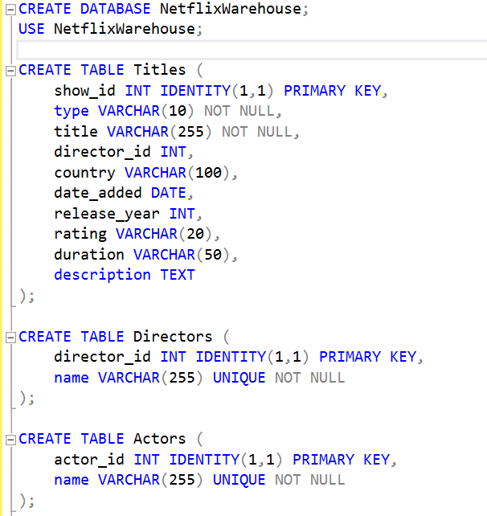

-
Janvier 2022 - Présent
Freelance
94832547700016
Thiais, France
Réalisation de missions variées en tant que freelance : restauration, accueil, manutention, mise en rayon, distribution de flyers et vente en prêt-à-porter. Adaptabilité à différents environnements de travail, garantissant un service efficace et de qualité. Interaction avec une large diversité de clients et collaborateurs, développant des compétences en communication, en relation client et en travail d’équipe.
-
Juillet 2023 - Présent
Equipière de vente Fruits et légumes
Carrefour France
Thiais, France
Mise en rayon et gestion optimisée des stocks de fruits et légumes pour garantir leur fraîcheur et attractivité. Vérification rigoureuse de la qualité des produits et retrait des articles abîmés. Interaction quotidienne avec la clientèle, en apportant conseils et informations sur les produits, développant ainsi des compétences en communication et en service client.
-
Janvier 2021 - Juillet 2023
Equipier polyvalent
Macdonalds, Buffalo Grill
Créteil, France
Préparation en cuisine en respectant les normes d'hygiène et de sécurité, assemblage des commandes avec rapidité et précision. Service au comptoir et au drive, garantissant une prise en charge efficace des clients et une communication fluide. Gestion des stocks et entretien des espaces de travail pour assurer un environnement propre et organisé. Polyvalence et esprit d’équipe pour s’adapter aux différents postes et aux exigences du service rapide.
Janvier 2021 - Juillet 2023
Equipier Polyvalent
-
Mai 2021 - Septembre 2021
Sapeur Pompier Volontaire
SDIS 25
Besançon, France
Accueil des patients dans le centre de vaccination en assurant la vérification des rendez-vous et des documents requis. Orientation des patients vers la salle d’attente, coordination avec les médecins pour la prise en charge et suivi post-vaccination. Impression et remise des certificats, gestion des prises de rendez-vous et assistance administrative. Collaboration étroite avec les sapeurs-pompiers, militaires et personnels médicaux pour garantir un parcours fluide et sécurisé des patients.
Mes Projets
Découvrez mes réalisations en Data Analysis et Business Intelligence.
